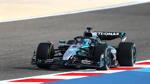

Welcome to the world of formula 1

Experience the pinnacle of motorsport where speed, precision, and innovation collide. Formula 1 is more than just racing — it's a global spectacle featuring cutting-edge technology, elite drivers, and legendary teams competing across iconic circuits. Every race weekend brings intense drama, from high-stakes qualifying laps to strategic battles on race day. Millions of fans around the world tune in to witness breathtaking overtakes, split-second decisions, and the relentless pursuit of perfection. Whether it's under the lights of night races or the historic corners of classic tracks, Formula 1 delivers unmatched excitement at every turn.
About Formula 1

Formula 1 represents the highest level of single-seater motorsport, governed by the Fédération Internationale de l'Automobile (FIA). Since its inception in 1950, the sport has evolved into a showcase of engineering excellence, blending aerodynamics, hybrid power units, and advanced data analytics. Each season features a championship battle across multiple Grands Prix, where drivers and constructors compete for the ultimate titles. Teams invest heavily in research and development, constantly pushing the boundaries of speed, safety, and performance. Regulations ensure competitive balance while still allowing innovation to thrive. Beyond the track, Formula 1 is a global phenomenon — combining sport, entertainment, and technology into one electrifying experience.
Teams & Drivers

Formula 1 is defined by the synergy between world-class drivers and elite teams. Drivers are among the most skilled athletes in the world, combining lightning-fast reflexes, physical endurance, and mental resilience to perform at speeds exceeding 300 km/h. Teams operate like precision machines, with hundreds of engineers, strategists, and mechanics working behind the scenes. From pit stop execution to race strategy, every detail plays a critical role in determining success. Legendary rivalries and emerging talents shape the narrative of each season. Whether it's a championship battle going down to the final lap or a rookie making a breakthrough performance, Formula 1 is driven by stories of ambition, rivalry, and excellence.